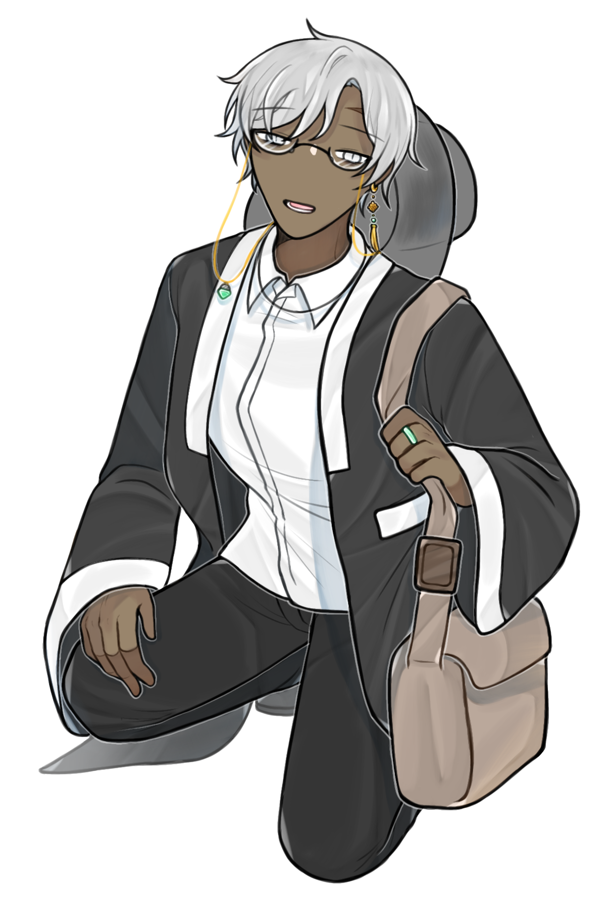

캐치 프레이즈
붓 한 획, 글 한 끗, 말 한 자.
하나로 귀결되는 모든 것.
하나의 기억, 하나의 인물, 하나의 소망.
한마디
“ 그대, 혹 내게 물음이 있소? ”
외관
은색, 잿빛이 도는 듯한 머리카락은 대체로 곱슬거립니다. 가르마를 탄 앞머리는 왼쪽 이마가 보이게 드러납니다. 전체적으로 머리의 길이가 썩 길지 않아 짧은 길이를 유지합니다. 눈매는 올라가 있어 다소 날카로운 인상을 자아내나, 자주 웃는 상이기에 썩 험상궂게 생겼다는 평을 받지는 않습니다. 다만, 눈 밑으로 내려온 다크써클로 인하여 피곤해보인다는 인상은 꽤나 받는 모양입니다. 이마에 진 흉을 제외하고는 곱게 자란 것처럼, 크게 눈에 띄는 점은 존재하지 않습니다. 피부가 다른 사람보다 어두운 편에 속합니다.
와이셔츠에 검은 긴바지, 무난한 복장이지만 겉에 두른 검은색 두루마기가 눈에 띄는 점입니다. 생활 한복을 즐겨 입는 모양인지, 동양적인 느낌이 무릇 나는 복장을 하고 다닙니다. 갓을 걸고 다니는 모습이라던가, 왼쪽 귀에만 있는 귀걸이라던가, 옥반지라던가, 안경줄에 걸린 청색 장식이라던가… 사소한 장식품도 굉장히 동양적인 쪽에 속합니다. 어쩌면 거추장스러워 보일지도 모르겠으나, 본인은 꽤나 익숙한 듯 잘도 정리하고 다니는 듯합니다. 신발은 검은 구두를 신고 다닙니다.
시력이 썩 좋은 편은 아닌 듯, 안경을 늘상 착용하고 다닙니다. 안경이 필수이기 때문일까요, 금색 줄은 늘 그 안경에 늘어져있습니다. 갓 끈이라던가, 길게 늘어진 귀걸이라던가, 꼬이기 쉬운 모양새임에도 불구하고도 그 패션을 고수하는 듯 합니다. 무슨 고집인지는 알 수 없지만서도요.
이름
에이다 B. 바오레타
Ada B. Baoreta
나이
32세
키/체중
182 cm / 86 kg
성격
Keyword: 다정한, 행동주의, 침묵하는 이해자
선생이라는 직업을 가지고 있는 이이기 때문일까요? 그의 언행은 썩 경계심이 높지 않습니다. 나이가 썩 많은 것도 아니나, 그래도 어른이라는 직책을 가지고 있기 때문에 그에 따른 무게를 마땅히 지는 것이라고 할 수 있겠습니다. 그러한 그는 상대가 어떠한 사람이든지 친절하게 대하는 것이 기본입니다. 그것이 사회생활이기 때문이라고 할 수도 있을 것이나, 하나를 더 덧붙이자면 그의 천성이 썩 나쁘지 않기 때문이라고 할 수 있을 것입니다.
말하는 모양을 보아하면, 꽤나 느긋한 성격을 가지고 있을 것으로 보이나… 생각보다 말보다 행동이 앞서는 사람입니다. 좋게 말하자면 솔선수범한 사람, 다르게 말하자면 성질이 급하다고 할 수 있을 것입니다. 하지만 무턱대고 자신의 주장을 고집하는 것이 아니기 때문에, 다른 사람과의 걸음은 마땅히 맞추는 존재입니다. 자신이 빠르게 해치울 수 있는 일이라면, 먼저 모든 일을 해치워버릴 수도 있겠지만서도요. 그것이 썩 나쁜 일은 아니지 않습니까? 아마도요.
모든 것을 말하고 다니고, 설득하는 일은 굉장히 힘든 일일 것입니다. 또한, 제 직업은 ‘교사’. 자신의 발언권보다는, 상대 (주로 학생) 의 말에 경청하고 공감해주는 것이 중요하지 않습니까? 그렇기에 에이다는 구태여 어떠한 이야기를 꺼내지 않을 것입니다. 그저 필요로, 그것의 중요성이 높지 않기 때문에, 혹은 상대가 발언을 원하기 때문에… 그러한 사유로만 입을 여는 에이다는 분명히 침묵을 지키는 존재일 것입니다. 그리고 하염없이 상대에게 공감과 이해를 표하는 존재를, 어찌 이해자라고 하지 않을 수 있을까요. 그 모든 성향을 결합한 이는 변명할 여지가 없는 ‘침묵의 이해자’ 일 것입니다.
- 그대, 무엇이 고민이오? 목소리를 낮추어 말해주시게나. 내, 기다리고 있을 터이니.
기타
01. 개인정보
에이다의 국적은 한국입니다. 그러나 외국 이름을 가지고 있는 것은 그가 혼혈이기 때문이라고 할 수 있겠습니다. 한국 이름은 ‘수은하’ 로, 공적인 서류에서는 한국 이름을 사용하고 있습니다. 그러나 그가 외국 이름으로 자신을 소개하는 것은, 아무래도 강렬한 인상을 위함이라고 할 수 있겠습니다. 그의 긴 이름을 기억하긴 어려워도, 모호하게 이름이 긴 사람! 정도로는 기억될 수 있으니까요.
그러한 그는 중학교 한문 교사입니다. 어쩌면 그의 복식이 그 직업과 잘 맞아떨어진다고 할 수 있겠습니다. 어찌보면 그 관점이 정확하다고 할 수 있을 것입니다. 그가 초임이던 시절, 학생들에게 좋은 기억으로 남기 위하여 약간의 컨셉을 잡았던 것이 사실이니까요. 하루가 이틀이 되고, 이틀이 일주일이 되고, 사용하지 않는 날과 사용하는 날이 비슷해질 때쯤, 그것은 그의 말버릇으로 자리잡았습니다.
02. 말투 및 버릇
그의 말버릇은 굉장히 특이하다고 할 수 있을 것입니다. 그도 그럴 게, 그러한 컨셉을 잡는 것이 아니라면 이러한 말투를 쓰는 사람이 요즘 시대에 흔할 리가 없으니까요. 그가 쓰는 말버릇은 흔히 말하여 ‘사극 말투’ 입니다. ‘~하지 않소?’, ‘~하네만’... 기억에 잘 남기 위해 사용하던 말투가 어느샌가 자신에게 스며든 케이스입니다. 그러나, 자신도 처음에 얼떨떨하게 사용하였기 때문일까요? 그렇게 사극체에 마냥 익숙한 것은 아닌지 서툰 부분도 있습니다. 하오체를 쓴다던가, 하게체도 쓴다던가, 타인을 지칭할 때 ‘그대’ 라고 하기도 하고, 당신이라고 하기도 하고… 오락가락하는 부분이 꽤 있습니다. 그렇기에 이에 대한 지적을 받으면 굉장히 머쓱해한다고 합니다. 일반적인 말투도 사용하지 못하는 것은 절대 아닙니다.
이런 에이다의 말투는 평범한 어조를 담아내고 있습니다. 느긋하게 보일 수 있는 말버릇에, 조금 급한 자신의 성정이 결합되어 굉장히 평범한 말투로 자리잡은 모양입니다.
에이다의 버릇은 가지각색이라고 할 수 있을 것입니다. 말을 하거나, 무언가를 가르킬 때 손 대신 부채를 이용하는 행동이 많은 것이 가장 평범할 때라고 할 수 있겠습니다. 이외에는 막막하거나, 복잡하거나, 그런 상황에 맞닥뜨렸을 때는 골머리를 꽤나 썩히는 듯, 머리를 쥐어뜯곤 합니다. 꼭 세이브파일을 날려먹은 사람처럼요.
03. Like / Hate
에이다가 좋아하는 것은 옛날 느낌이 물신 나는 것입니다. 그렇기에 은반지보다는 옥반지를 고집하는 것일테며, 갓과 두루마기를 착용하고 다니는 것이겠죠. 고증은 딱히 따지지 않는 듯, 자유롭게 좋아합니다. 현대와 잘 어울려질 수록 더욱 선호하는 모습을 보이기도 합니다.
그러한 그가 꺼려하는 것은 혼자 고립되는 상황입니다. 다소 겁이 있는 모양인지, 그런 순간에는 온갖 상상과 귀신의 형상이 떠오른다고 합니다. 각종 괴담 이야기는 잘만 들으면서, 그런 것들을 무서워하니 어쩌면 아이러니할 지도 모르겠네요. 놀라는 것도 싫어함에 속할 정도로 달갑지 않다고 합니다. 장난 정도는 유순히 넘기겠지만.
04. 지하철
지하철에 탑승하기 전의 에이다는 개인적인 약속을 소화하고 있었습니다. 사회인이라면 마땅히 해결해야 되는 수많은 것들 중 하나가 약속이지 않겠습니까? 그러한 약속으로 인하여 늦은 귀가를 하고 있었던 그는 꽤나 피곤한 상태였다고 할 수 있을 것입니다.
그렇기 때문에 에이다는 지하철에 몸을 싣고 나서도 큰 행동을 하고 있지 않았습니다. 그야 휴대폰을 볼 기력까지도 저축하면서 귀가만을 생각하고 있었으니까요. 그러한 그가 자세한 소식을 알게 된 것은 재난문자 알림이 오게 된 이후라고 할 수 있을 것입니다.
소지품
:: 부채, 플라스틱 반지 꾸러미, 가방 ::
필요할 때 부치기도 하지만, 꼭 판소리를 하듯 말을 할 때나 무언가를 가르킬 때마다 늘 손에 들고다니는 검은색의 접이식 부채입니다. 별로 특별한 물건은 아니지만, 꽤나 소중하게 들고 다니며 애용하고 있습니다.
특이하게도, 에이다는 여러 색의 플라스틱 반지들이 담긴 꾸러미를 가지고 다닙니다. 학생들에게 선물해주는 일종의 보상인 것일까요, 아니면 본인이 모으는 것일까요? 알 수 없으나, 본인은 그 꾸러미를 가지고 다니는 것이 굉장히 만족스러운 모양입니다. 그 모양새는 꼭 흰 까마귀와 같은 수도 있겠네요.
이러한 모든 소지품을 담는 연갈색의 가방은 그의 필수품과 다름이 없다고 할 수 있겠습니다.
관계
박다인
경찰서에서 튼 안면, 에이다 B.바오레타 학생들이 담배로 인해 경찰서를 방문하게 됐다. 그런 학생들을 훈계하고 있던 박다인은 학생들의 담임 교사인 에이다 B. 바오레타와 첫 대면을 이어갔는데... 학생들의 이야기를 커피와 명함과 함께 주고 받으며 간간히 연락을 주고 받는 모양이다.